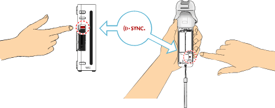
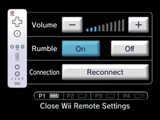
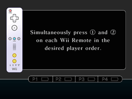

3 |
Controller Setup |
 |
Hold the controller as shown below to play this software. Note: For information about how to attach the wrist strap and Wii Remote Jacket, refer to the Wii Operations Manual.
IMPORTANT: Always use the wrist strap when using the Wii Remote. See page 2 Usage Precautions. Note: Always refer to the instruction manual for each controller that you use.
This procedure allows the Wii Remote controller to communicate with the Wii console. The Wii Remote included with your Wii console has been synchronized with the Wii console at the factory. There are two different modes of synchronizing (syncing) a Wii Remote with your Wii console. STANDARD MODE - The Standard Mode procedure is used when adding additional Wii Remotes to your Wii console or if you want to re-synchronize your original Wii Remote. Once synchronized, the Wii Remote will stay synced to the Wii console unless you overwrite this setting by syncing the Wii Remote to a different Wii console. ONE-TIME MODE - This mode allows you to temporarily use your Wii Remote on a Wii console other than your own or to use a friend's Wii Remote on your Wii console. It does not delete the Standard Mode setting stored in the Wii Remote. In this mode, the Wii Remote will only communicate with the Wii console while the power is on. When the power is turned off, the Wii Remote will lose its sync with the Wii console. Note: Only a Wii Remote in Standard Mode can turn the Wii console power ON or OFF. Standard Mode Synchronization Note: Make sure you have placed batteries in the Wii Remote.

This procedure must be followed for each additional Wii Remote added to your Wii console. One-Time Mode Synchronization Note: This mode temporarily removes the Standard Mode synchronization setup for all Wii Remotes until the power of the Wii console is turned off. When the power is turned back on again, the Standard Mode settings will return.


IMPORTANT: If your Wii Remote loses its synchronization with the Wii console and you are unable to re-sync it, review the Wii Remote troubleshooting procedures in the Wii Operations Manual. |

 |
 |
 |